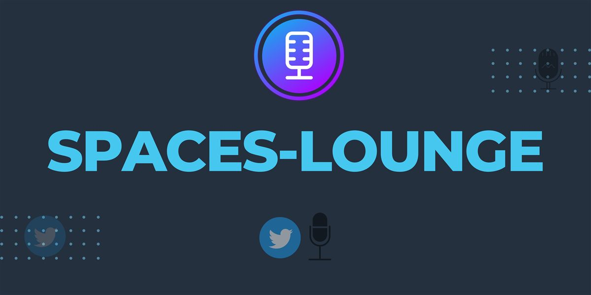

Featured · ★ 37
Spaces Lounge
A lounge for Twitter/X Spaces hosts and speakers: find upcoming Spaces, filter by topic, and help hosts find speakers.
Next.js · Tailwind CSS · Figma
Visit spaceslounge.vercel.app →Project Manager · Chiba, Japan
I lead software projects at FPT Japan, bridging people, languages and cultures so teams build the right thing together. PMP, Women Techmakers Ambassador, public speaker and community manager. I share about tech, Japan and art.
01 About
“The role isn't defined by the languages you speak. It's defined by the clarity you create.” On being a Bridge Software Engineer
I have more than 12 years of experience in software engineering and management. Today I'm a Project Manager at FPT Japan, where I draw on management, team management and business management to keep teams working together and projects delivered.
Before that, I supported cross-functional teams as a Bridge Software Engineer and Developer Advocate at YNS, helping technical teams and clients understand each other. I care about innovation and teamwork, and about aligning organizational goals with member wellbeing and client satisfaction.
In short: I'm a Filipino technical PM working in Japan, with 8 years as a back-end, BI and data engineer and 3 years in offshore management. My strength is connecting clients, Japan-side PMs and development teams in the Philippines, and turning requirements that were only discussed out loud into specs, designs and test materials people can build from.
02 Experience
2026 — Now
Project Manager Jun 2026 – Present
Business Analyst | Technical Lead Jan 2026 – May 2026
Java · Spring Boot · Angular · MySQL · AWS
2022 — 2025
Bridge Software Engineer & Developer Advocate Mar 2023 – Dec 2025
Bridge Software Engineer Aug 2022 – Mar 2023
PHP · Laravel · Vue.js · MySQL · Firebase · Cordova · Monaca · AWS
2014 — 2022
Systems and Data Engineer Apr 2014 – Aug 2022
Python · Flask · Django · BigQuery · Google Apps Script · GCP · Docker · LookML · dbt · React
2008 — 2010
教師 · Teacher Jun 2008 – Apr 2010
Presentation skills and Japanese.
03 Projects

Featured · ★ 37
A lounge for Twitter/X Spaces hosts and speakers: find upcoming Spaces, filter by topic, and help hosts find speakers.
Next.js · Tailwind CSS · Figma
Visit spaceslounge.vercel.app →English study guides for Japan's Applied Information Technology Engineer exam (応用情報技術者試験), for non-native speakers in Japanese IT.
Markdown · HTML
A Japanese language training app for beginners.
Flutter · Dart
Hiragana practice worksheets for Japanese learners.
Picks up the scheduled Spaces from the accounts you follow.
A sample reservation system.
PHP
04 Credentials
PMP®
Project Management Institute · May 2026 – May 2029
Passed with Above Target in all domains.
05 Community & speaking
Aug 2024 – Present
Empowering communities through events, public speaking, content and mentoring, and helping new applicants to the program.
Ongoing
Melting Hack, Open Source Software PH and 4C.
Ongoing
Live conversations on tech careers, life in Japan and topics like managing anxiety in tech.
Open to
Causes in arts and culture, community improvement and education.
Next chapter Standing on a TEDx stage.
06 Skills & languages
Tagalog native or bilingual · 日本語 native or bilingual, JLPT N1 · English native or bilingual, CEFR C2
Project Management · Software Project Management · Engineering Management · Management · Team Management · Business Management · Project Teams · Scheduling Management · Business Process Improvement · Quality Assurance · Problem Solving · Communication · Mentoring · Leadership Mentoring
Architecture & Non-functional Design · Design Standards & Reviews · Requirements Definition · Specification & DB Design · Software Design · Design Development · Web Application Development · Web Applications · Web Development · Back-End Web Development · Web Design · HTML Scripting · JavaScript · Python · Git · Algorithms · Data Structures · Google BigQuery · Looker · Domo · Google Apps Script · Google Cloud Platform (GCP)
Java · Spring Boot · Python · Django · Flask · PHP · Laravel · CakePHP · JavaScript · Angular · Vue.js · React · Next.js · jQuery · HTML5 · CSS3 · Bootstrap · Tailwind CSS · Flutter · Cordova · Monaca · SQL · MySQL · BigQuery · LookML · dbt · ETL/ELT · AWS · Google Cloud · Firebase · Docker · Nginx · Linux · macOS · GitHub · Figma · Slack · VS Code · Vim · IntelliJ IDEA · Xcode
Japanese · English · Japanese to English · English to Japanese · Translation · Public Speaking · Presentation Skills · Company Secretarial Work · Executive Administrative Assistance
Learning & teaching Japanese · Talking to people · Drawing & digital illustration · Manga & anime · Web design · Hosting Spaces · Open source
07 Advice corner
My guide in English to Japanese job hunting for engineers: how to prepare, how 就活 works, and what to expect from 説明会, the SPI, entry sheets, interviews and the 履歴書.
Read the guide →